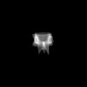
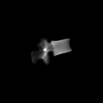
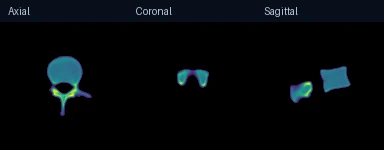
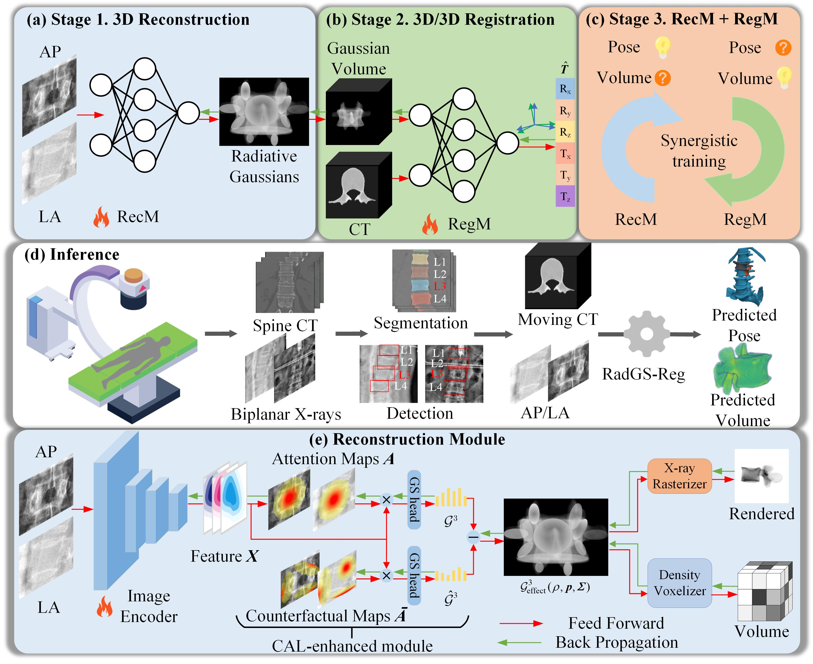
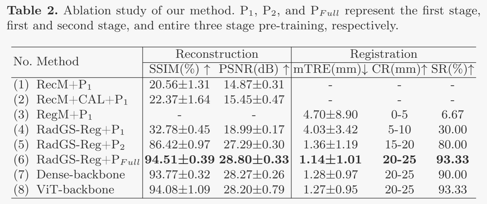
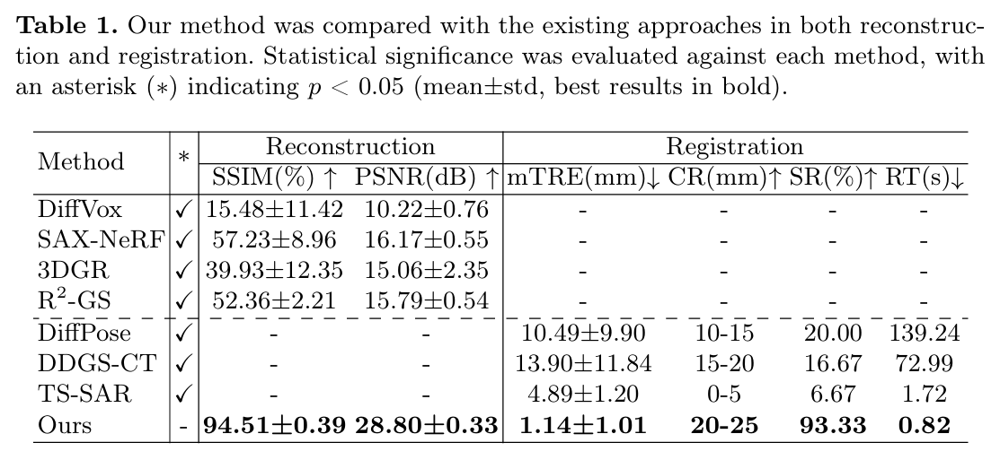

MICCAI 2025
Ao Shen1, Xueming Fu2, Junfeng Jiang3 ✉, Qiang Zeng3, Ye Tang1, Zhengming Chen1, Luming Nong4, Feng Wang5, S. Kevin Zhou2 ✉
1 College of Information Science and Engineering, Hohai University (HHU), Changzhou Jiangsu, 213200, China
2 School of Biomedical Engineering, Division of Life Sciences and Medicine, University of Science and Technology of China (USTC), Hefei Anhui, 230026, China
3 College of Artificial Intelligence and Automation, HHU, Changzhou Jiangsu, 213200, China
4 The Third Affiliated Hospital of Nanjing Medical University, Changzhou Jiangsu, 213164, China
5 Tuodao Medical Technology Co., Ltd., Nanjing Jiangsu, 210012, China
From two X-rays to a 3D vertebra. Select a sample to explore its RecM reconstruction.



Five held-out CTSpine1K samples with simulated AP and lateral X-rays. Colors indicate reconstructed attenuation. ModelTest data
Computed Tomography (CT)/X-ray registration in image guided navigation remains challenging because of its stringent requirements for high accuracy and real-time performance. Traditional "render and compare" methods, relying on iterative projection and comparison, suffer from spatial information loss and domain gap. 3D reconstruction from biplanar X-rays supplements spatial and shape information for 2D/3D registration, but current methods are limited by dense-view requirements and struggles with noisy X-rays. To address these limitations, we introduce RadGS-Reg, a novel framework for vertebral-level CT/X-ray registration through joint 3D Radiative Gaussians (RadGS) reconstruction and 3D/3D registration. Specifically, our biplanar X-rays vertebral RadGS reconstruction module explores learning-based RadGS reconstruction method with a Counterfactual Attention Learning (CAL) mechanism, focusing on vertebral regions in noisy X-rays. Additionally, a patient-specific pre-training strategy progressively adapts the RadGS Reg from simulated to real data while simultaneously learning vertebral shape prior knowledge. Experiments on in-house datasets demonstrate the state-of-the-art performance for both tasks, surpassing existing methods.

Inspired by recent progress in 3D reconstruction in the field of computer vision, we present a novel approach termed RadGS-Reg to joint learning of Radiative Gaussians Reconstruction and 3D/3D Registration for CT/Xray Registration. This methodology entails the transformation of biplanar X-rays inputs into Radiative Gaussians (RadGS), which is subsequently registered with the provided CT volume. The task of accurately reconstructing RadGS using only biplanar X-rays presents a significant challenge. To address this, we unveil the synergistic interaction between 3D reconstruction and CT/3D Gaussians registration. Specifically, the shape of the preoperative CT volume constitutes the ultimate target within the 3D reconstruction process. Concurrently, the pose of the RadGS derived from biplanar X-rays is registered with the target pose of the preoperative CT volume. To mitigate the issue of spinal pose variation in CT and X-ray, we utilize the visually-grounded, region-specific vertebral-level identified in X-rays, along with the vertebral-level in the CT volume segmented using existing methods for vertebrae segmentation. To address the complication posed by the overlap of adjacent vertebral joints, which may impede the reconstruction of individual vertebrae, we integrate Counterfactual Attention Learning (CAL), concentrating on vertebra regions to enhance reconstruction accuracy.

